Confecționate de către ortodocși pentru ortodocși
60lucrări
3țări
12turnătorii
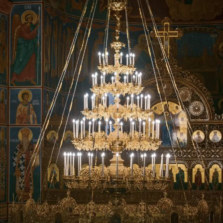
Parohia Dej IIIDej, Cluj · Policandru 3 nivele · 2023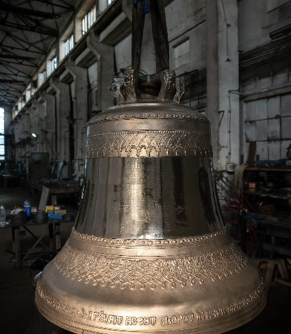
Parohia Ziua CruciiIași · Clopot 310 kg · 2022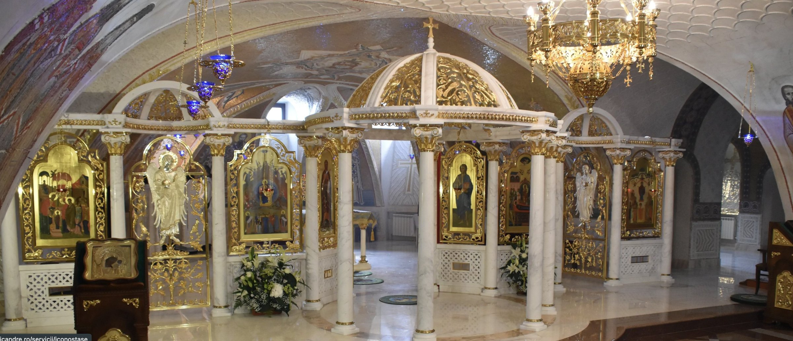
Iconostas din marmurăPorți aurite Iconostas din bronzTurnat și aurit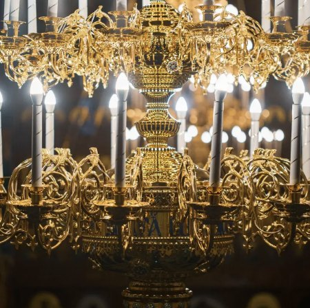
Parohia Dej IIIDetaliu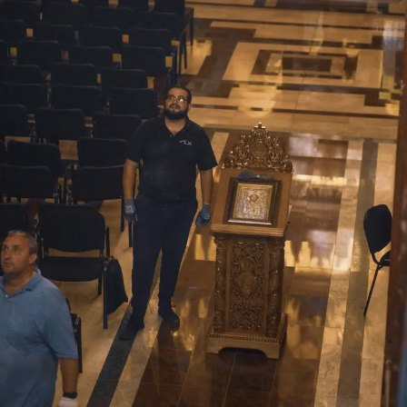
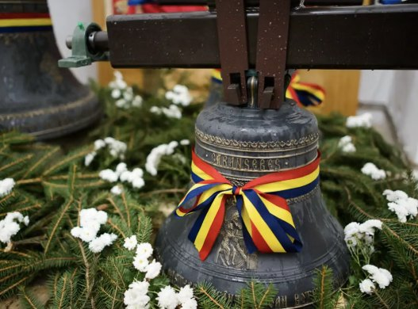
Parohia Caransebeș2022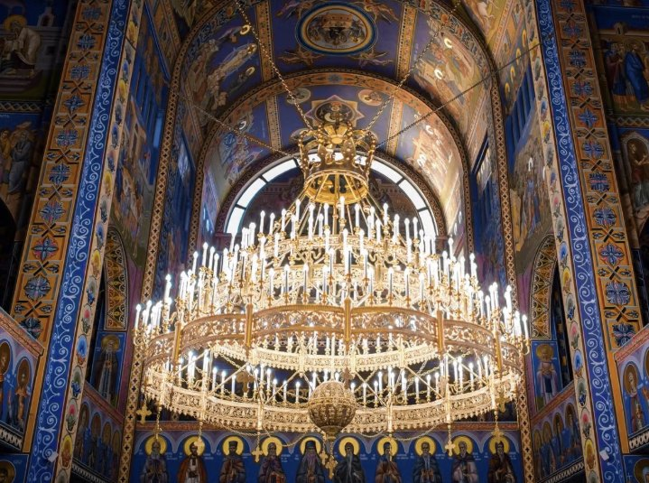
Policandre11 lucrări Parohia AdâncataSuceava · 202260 lucrări în 3 țări
Deschideți harta →
S.C. Premium Bells SRL este compania ce reprezintă cele mai mari și mai cotate turnătorii de clopote din lumea ortodoxă — din Iaroslavl și Kamensk-Uralsky, dar și compania Belltron din Italia, astfel promovând:
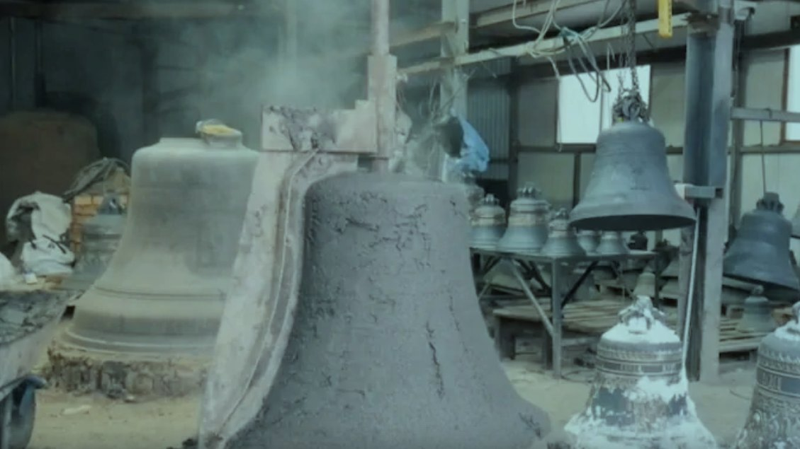
În turnătorie[locul] · [durata]„Cu fiască smerenie, am primit binecuvântare de la IPS Pimen, Arhiepiscopul Sucevei și Rădăuților — pentru importul și promovarea artei clopotelor în parohiile și mănăstirile României.”
13 clopote, 11 tone, turnate la Iaroslavl pentru Mănăstirea Putna · sfințite pe 10 iulie 2016
Ascultați · [locul și clopotele, din CMS]
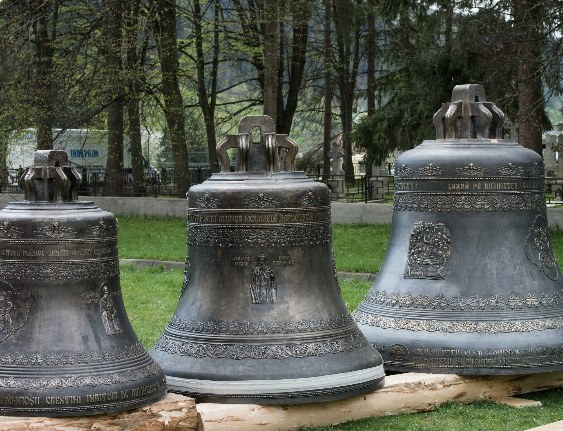
Articol · 17 feb. 2023 · 6 min de citit De la clopotul Buga al lui Ștefan cel Mare la noile clopote ale Mănăstirii Putna Sfântul Ștefan cel Mare a avut grijă, printre altele, să înzestreze ctitoria sa cea iubită cu mai multe clopote, dintre care două au ajuns până la noi. Citiți articolul →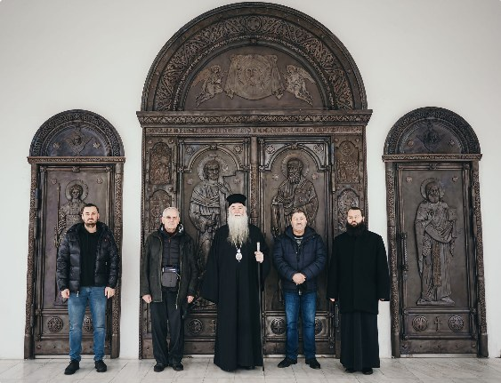
Raport · 18 feb. 2023 · 5 min de citit Raport 18 ianuarie 2023 La o întâlnire cu PS Nicodim, Episcopul Severinului și Strehaiei, am discutat despre ușile de intrare ale Catedralei Învierea Domnului din Drobeta-Turnu Severin. Citiți articolul →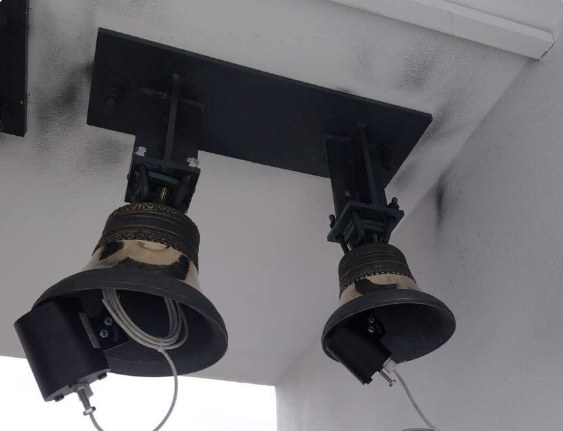
Articol · 18 feb. 2023 · 5 min de citit Clopotar electronic pentru clopote fixe — mai performant Noul sistem de ciocane pentru clopotele ortodoxe a fost creat de Belltron pentru piața bisericească ortodoxă, în continuă creștere în Europa de Est. Citiți articolul →